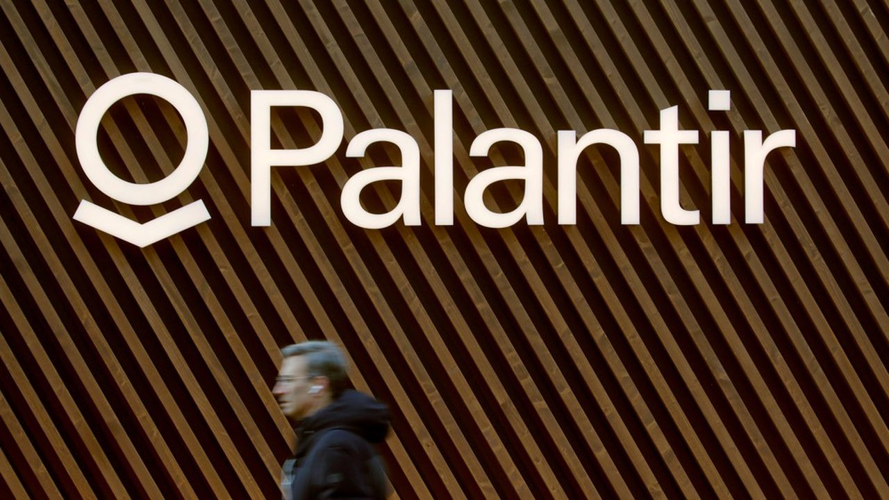
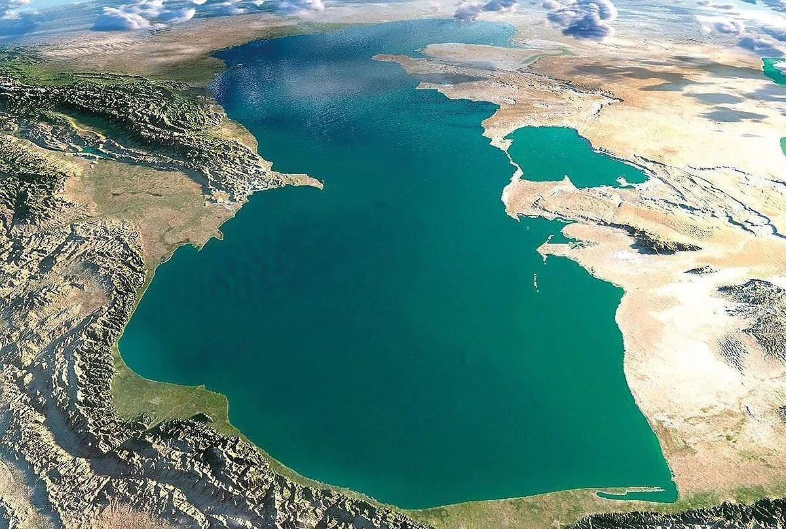

GéopolitiqueLong format
14 MIN
06.06.2026 · Pacifique
Le calendrier-écho : comment 2027 a survécu à sa propre révision
Le 19 mars 2026, l'Intelligence Community américaine a discrètement réécrit ce que cinq ans de doctrine avaient érigé en horizon central. La date n'a pas bougé.

RenseignementSouveraineté
15.12.2025 · DGSI
Palantir, l'entreprise qui ne se cache plus de vouloir refaire l'État
Éditorial · 15.01.2026
HubEE, ORION 26 : la France est déjà en guerre, mais elle ne le sait pas.
« Il coûte infiniment moins cher d'éteindre un État que de l'envahir. »

GéopolitiqueEnquête
11 MIN
22.05.2026 · Caucase
Arménie–Azerbaïdjan : la paix turcophone redessine la mer Caspienne
Le corridor de Zanguezour change la donne énergétique européenne. Cartographie et acteurs.